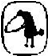

Charles Bukowski 1920 yılında Almanya’da doğdu, iki yaşındayken ailesiyle birlikte ABD’ye, Los Angeles’a göç etti. İlk öyküsünü yirmi dört yaşındayken yayımlayan Bukowski, otuz beş yaşında şiir yazmaya başladı. Bugün Kaliforniya, San Pedro’da yaşayan Bukowski’nin şiir ve öykülerini toplayan kırk beş kitap yayımlanmış, yapıtları bir düzinenin üzerinde dile çevrilmiş, öykü ve şiirleri dünyanın pek çok ülkesindeki dergilerde yer almıştır. Ülkemizde daha önce Sokak dergisinde çıkan öyküleriyle tanıdığımız Charles Bukowski’nin son yapıtları arasında şunları sayabiliriz: Barfly filminin senaryosu (1987), The Roominghouse Madrigals: Early Selected Poems 1946-1966 (1988), Hollywood (roman, 1989; Hollywood, Yapı Kredi Yayınları, 1992, çev. Avi Pardo), Ham on Rye (1991). Yazarın bir öykü seçkisi de Kasabanın En Güzel Kızı adıyla yayınevimizce yayımlanmıştır (1992, çev. Avi Pardo).
